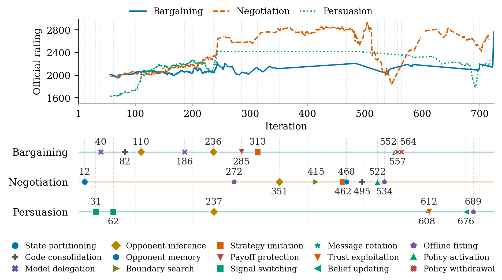
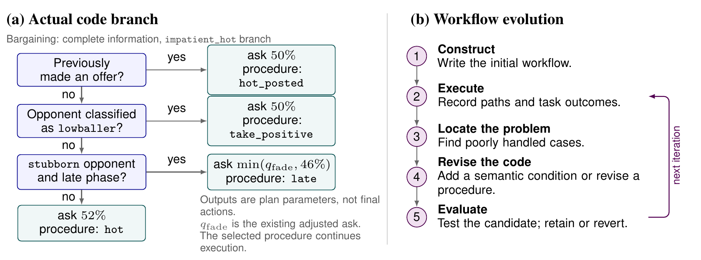
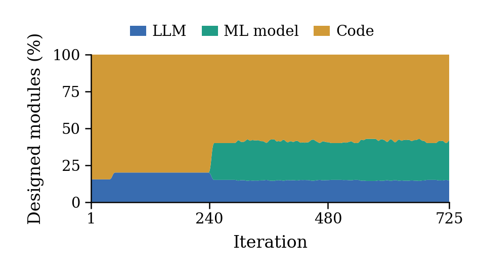
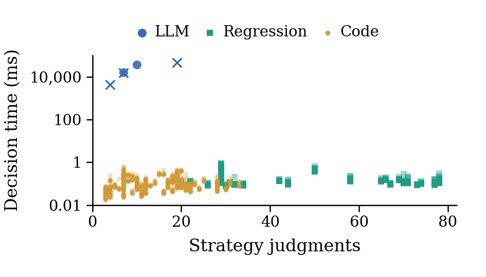
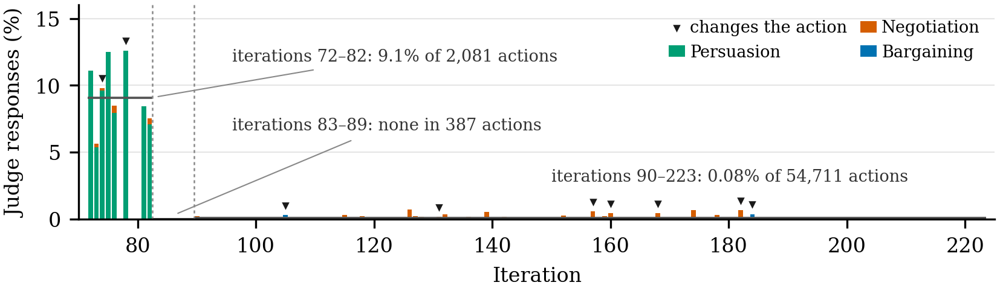
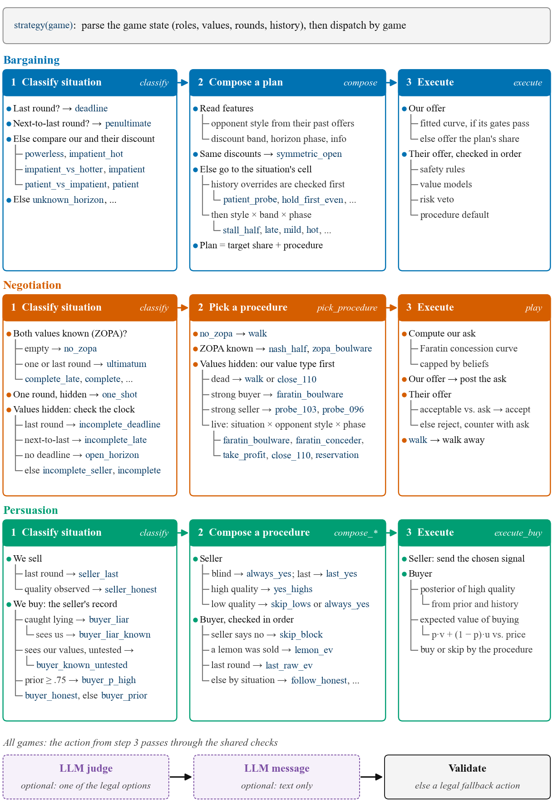
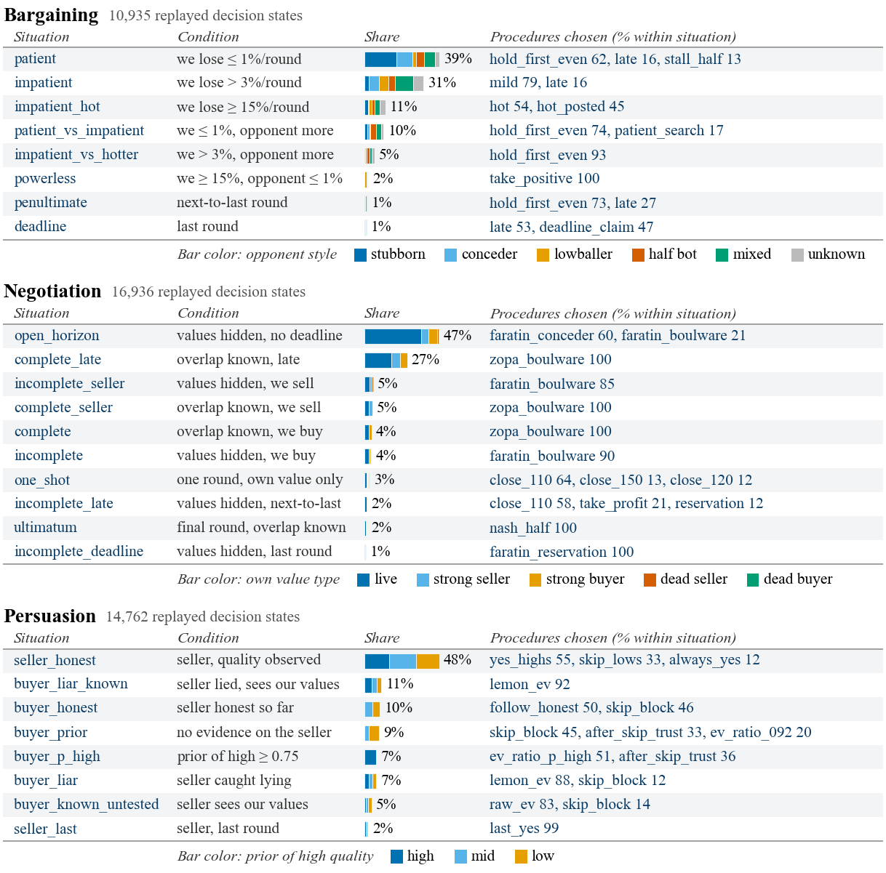

NeurIPS 2026 Workshop on Interpreting Agent Behavior (IAB) · GLEE Competition Track · Spotlight
🏆 1st overall in the GLEE Competition
1City University of Hong Kong 2Tencent Jarvis Lab

Agentic workflows organize complex tasks into reusable procedures. However, invoking an LLM at every step incurs repeated inference costs and delays. We propose a framework for self-evolving agentic workflows through semantic task decomposition. Each subtask has explicit applicability conditions and a procedure that executes code or invokes a model as needed. An agent uses execution feedback to refine the decomposition and update these procedures. Experiments in the GLEE competition demonstrate the framework across bargaining, negotiation, and persuasion, with most observed final-decision procedures implemented in code.

Our method separates the workflow that makes decisions from the agent that improves it. The workflow is executable code and remains fixed during an interaction. After execution, the agent may revise that code using the resulting records and task outcomes.
At iteration k, workflow Wk specifies a decision structure, parameters and solution procedures. Given the input xt and the interaction history ht, it returns an action at and an execution trace τt:
(at, τt) = Wk(xt, ht)
The program may use conditions, function calls, nesting and loops, so its structure is not restricted to a decision tree. Each operation can execute code directly or invoke a model: an LLM for unresolved language-dependent decisions, or a learned predictor for an estimated quantity. The surrounding program decides when an operation is used, supplies its inputs and processes its output.
The agent executes Wk, collects execution traces and task outcomes Dk, and examines poorly handled cases. It then builds a candidate W̃k+1 = 𝒜(Wk, Dk) with one or more of four operations:
The candidate is checked with replay, held-out records or bounded deployment. If retained it becomes Wk+1; otherwise the previous workflow is kept. Revisions happen between interactions, never during one.
We evaluate the agent on Bargaining, Negotiation and Persuasion in GLEE against the other competition agents. Performance is the official GLEE rating, and efficiency is the local decision time per action. GPT-5.5 revises the workflows via OpenProgram, and Grok-4.6 serves the optional runtime LLM modules.
| Measure | Bargaining | Negotiation | Persuasion |
|---|---|---|---|
| Official rating ↑ | 2760.27 | 2761.67 | 2261.58 |
| Mean branches per strategy node | 2.13 | 2.25 | 2.24 |
| Mean strategy judgments per action | 37.61 | 22.95 | 7.42 |
| Mean local decision time (ms) | 0.118 | 0.198 | 0.122 |
The agent keeps revising its strategies throughout development (Figure 1), and revisions withdraw strategies as well as add them. A model judge enters Bargaining at iteration 40 and is disabled at 186. Each environment follows its own path: Negotiation first separates roles and hidden types, later probes the acceptance interval and remembers opponents across games; Persuasion switches its signals and sells a low-quality product after trust is built; Bargaining protects its payoff and mirrors revealed demands. The initial workflows contain none of these procedures, which the agent derives from game records.
The agent decides through three kinds of modules: code, fitted machine-learning models and LLM calls. Code makes up most designed modules throughout development, fitted models join as the workflows learn from recorded games, and LLM modules remain as optional interfaces. Code and fitted models decide in under a millisecond, while the measured LLM calls take seconds and mostly fail.


Figure 3. (a) Shares of designed decision modules by executor across iterations. (b) Decision time per executor against strategy judgments per decision (log scale). Crosses mark failed LLM calls.
In actual play, the LLM judge decides rarely and less over time. Early on it answers about one in eleven non-message actions, almost all of them Persuasion buyer decisions, and its answers agree with the code in all but one case. The agent then makes these decisions deterministic, and judge responses almost vanish after iteration 90.

The final code reaches each move through three levels, and each level answers a different question. Ordered rules first name the current situation. A second step reads further features and selects a procedure for that situation: Bargaining reads the opponent's concession style, Negotiation reads the type of our own hidden value, and Persuasion separates seller and buyer and tracks how credible the seller's signals have been. A last step turns the procedure into a concrete offer or decision. All numbers come from code; the optional model calls at the end can only choose among precomputed legal options or write message text.

To see which branches carry the decisions in practice, we replay the decision states recorded during development through the final revision. In each game a few situations receive most states, and within a situation one or two procedures handle most of them. Rare situations, such as the last round or one-round games, still keep their own leaves, added for edge cases met during development.

@inproceedings{fu2026seaflow,
title = {Self-Evolving Agentic Workflows via Semantic Decomposition of Complex Tasks},
author = {Fu, Zichuan and Qi, Junjia and Wu, Xian and Zhang, Wenlin and Deng, Yimin and Guo, Kaifeng and Zhao, Xiangyu},
booktitle = {NeurIPS 2026 Workshop on Interpreting Agent Behavior (IAB), GLEE Competition Track},
year = {2026}
}